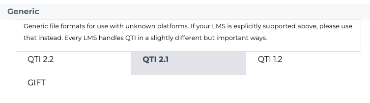
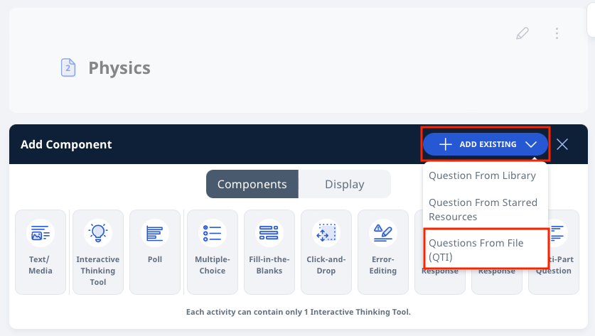
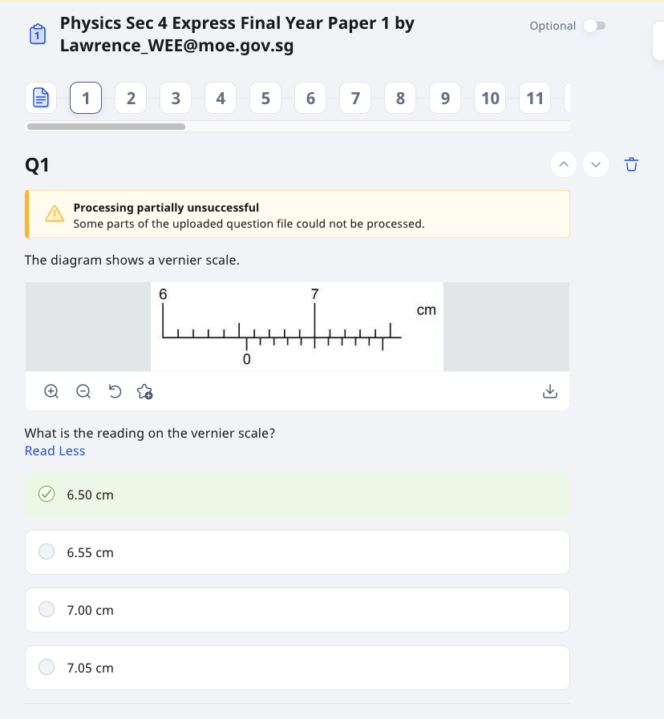

Considerations when creating a QTI File (WIP)
When creating QTI File for SLS, the maximum number of questions allowed in SLS is 100 questions per file. Some guidelines to uploading a QTI file include:
-
Only QTI 2.1 files are accepted
-
Question Requirements:
-
Questions stem/images
-
Answer options (if applicable)
-
-
File Upload:
-
A recognised QTI 2.1 zipped file from any QTI converted tool (e.g. https://getmarked.ai/) with no more than 100 questions.
-
Note:
-
Identifying the correct answers to Multiple-Choice Questions with single or multiple responses can be done within SLS after the questions have been uploaded.
-
You may add Hints, Teacher Feedback and Question Tags to questions within SLS. Tagged questions will be reflected in the Learning Progress when they have been attempted by students.
Uploading a QTI 2.1 ZIP file in SLS
-
Ensure your QTI file is exported as QTI 2.1 version.
From the Lesson or Course Editor, click Add Existing and select Questions From File (QTI) from the dropdown menu.
Upload a QTI zip file into the Import Question subpage and click Upload.
Note: A sample file can be found here.
If the file is valid, it will be uploaded and scanned for viruses.
Note: The virus scan will take longer if the file size is large.
When the file is successfully uploaded, the QTI questions will be added to the Lesson or Course. Each question in your ZIP folder will appear as a standalone question within the Activity.
Should there be an error message indicating “processing partially unsuccessful”, you may have to manually make some edits to the question.
 Note: Click the thumbnail below to download the e-Poster for Phygital Learning.
FAQs
-
Why does the QTI file fail to be accepted by SLS after being uploaded to SLS?
Ensure the version of your QTI file is QTI 2.1.
-
Where can I read more about QTI version used by SLS?
You can check out https://digitaliser.getmarked.ai/blog/complete-guide-to-qti/.
-
I tried downloading the zip file on my Safari browser but the file was unzipped automatically.
Go to your Safari Preference and uncheck “Open “safe” files after downloading”. This should allow you to download the zip file without it being automatically unzipped.